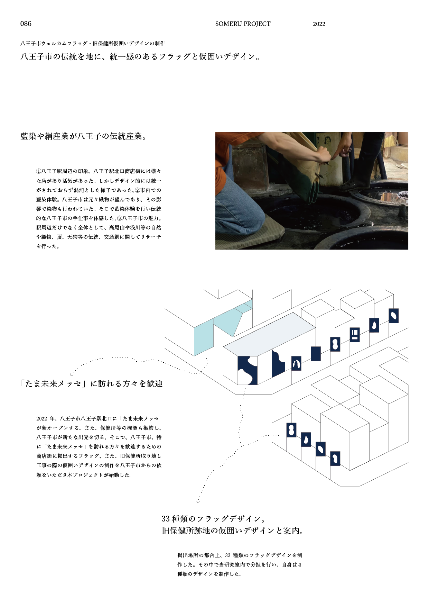

八王子初めるプロジェクト
SOMERU PROJECT
八王子市ウェルカムフラッグ・旧保健所仮囲いデザインの制作
統一感のあるフラッグと仮囲いデザイン。
八王子駅北口の東と西に、新たな施設がオープンする今、街を訪れるみなさまを歓迎する気持ちを込めて八王子市らしいフラッグや案内サインのデザイン制作を行なった。プロジェクトの「そめる」には、2つの意味を込め、ひとつは、染物の「染める」、もうひとつは、新しくスタートする意の「初める」である。街を訪れる方を歓迎するフラッグでは、末広がりや無限大を意味する「八」をモチーフに様々な視点からデザイン制作を行なった。また、旧八王子市保健所跡地の仮囲いではそのフラッグで制作したデザインをもとにそれの一部を切り取る形でデザイン制作を行なった。
